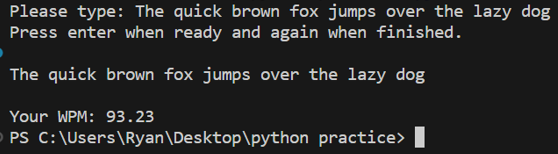

Projects
Some of the recent projects I have worked on
Wordle Solver
Wordle is a game in which a player has 6 attempts to guess the 5-letter word of the day. I created a program that uses a list of potential words as well as feedback from each turn to assist in solving the wordle every time.
Words per Minute
After practicing with python's time package, I was able to build a words per minute calculator. This program asks the user to type a phrase and calculates the user's WPM based on the amount of time taken for the user to enter the phrase.
AI Face Detector
This project uses OpenCV haarcascade files to read in a picture and evaluate whether or not the image contains a face. If a face and eyes are recognized, they are highlighted with boxes.